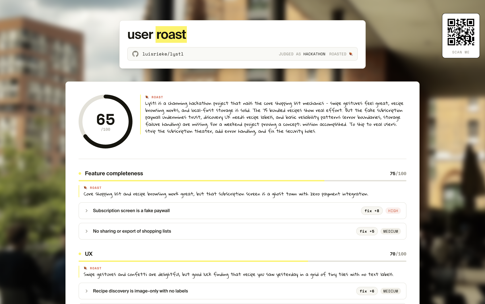

The Lighthouse Score for your product.
Users bounce in silence. We tell you why.
who has it
Indie makers & teams shipping software.
the pain
You can't see why users churn.
what they do today
Beg friends, pay $100+ for user tests, and ship on opinion instead of real user behavior.
🍖 the brutal truth
"Works on my machine" ≠ "Obvious to a stranger." You built it, so of course it makes sense — to you.
A honest user, on demand.
Give us your repo. We read your whole codebase like a brutal first-time user — then score it and hand you the fix.
Point
Drop in a public repo.
Score
Scored 0–100 on UX, features, reliability & more.
PR
Improve your score by shipping what users wish for.

Every release loops back through the roast — your product fixes itself. 🍖
Impossible 18 months ago.
Only now can a model hold a whole codebase in context and judge product quality — for cents per run.
what changed
Long-context models got good and cheap. Full-repo eval for cents.
more than a wrapper
Not a prompt — a rubric-driven eval harness, calibrated on real products. The benchmark is the moat.
Every run feeds the benchmark — the rubric compounds with each roast. 🍖
Bottom-up, not top-down.
every release → an honest roast → a sharper product
→ more reasons to ship compounding loop
a product that learns from its own users gets better on its own —
a moat that widens while you sleep self-improving
direct
Recruited user testing (UserTesting, Maze, Dovetail) — slow, expensive.
indirect
Analytics & session replay (PostHog, Hotjar) — what happened, never why.
status quo
Friends, a Reddit thread, gut feel. Biased and impossible to repeat.
why we win
Instant, pre-traffic, $0 recruiting, brutally honest — works on day zero.
People pay to stop guessing.
who pays · how often
Founders & teams, pay as you go. One roast per release.
how much
Tokenized — you pay per pull request we roast. Buy credits whenever you want to improve your product.
the upside
12 roasted today → a roast on every release. Each repo bills again every time it ships.
where this goes
Public roasts pull builders in; CI-native private roasts on every PR keep them. The benchmark compounds with each run — the moat widens while we sleep. 🍖
Weakest point: does a code-read roast predict real churn? Next test — crawl Reddit, forums & reviews for what real users already complain about. 🍖
The roast is the funnel.
We publicly roast products builders already love. The score is share-bait — they click through to roast their own.
Roast content
One controversial public score a week → HN, r/SaaS, X. Every roast is a shareable card.
Founder DMs
Direct outreach where we already live: Indie Hackers, dev Discords, X.
Maintainer pull
Roasted maintainers share their own score — free distribution to people who build products.
A PM + Dev duo who ship.
We shipped dev tools, watched our own users bounce without a word, then ran the research that explained why. Userroast is the tool we wished we had.
Luis Rieke · product & go-to-market · Malte Janßen · engineering & infra
Luis Rieke · product & growth
Senior PM at Finanzguru, ex-Usercentrics. Runs discovery, talks to users, and owns go-to-market.
Malte Janßen · engineering & infra
Engineer at AWS. Owns architecture, infrastructure and delivery — the part that scales.
Find out what your users were never going to tell you. 🍖